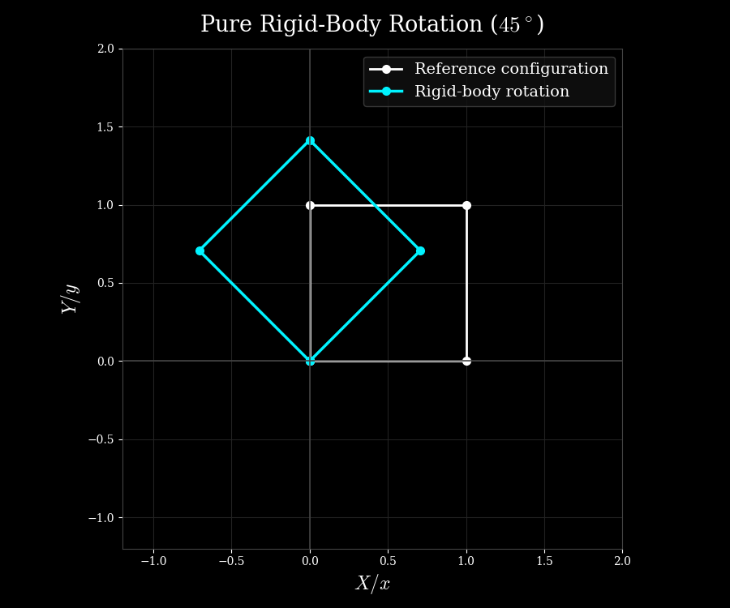

Geometric Nonlinearity
Geometric Nonlinearity in Finite Element Analysis
Geometric nonlinearity arises when the deformation and rotation of a structure become sufficiently large that the linearized kinematic assumptions are no longer adequate. Importantly, the material itself may still behave strictly linearly (Hookean). Under these conditions, the relationship between deformation and strain must be described using finite-deformation kinematics. Consequently another layer of nonlinearity is introduced into the equilibrium equations.
The Failure of Linear Strain
In linear elasticity, the infinitesimal strain tensor is defined as:
\[\boldsymbol{\epsilon} = \frac{1}{2} \left( \nabla_{\boldsymbol{X}} \mathbf{u} + (\nabla_{\boldsymbol{X}} \mathbf{u})^T \right)\]
This linear formulation assumes that displacement gradients (\(\nabla_{\boldsymbol{X}} \mathbf{u}\)) are infinitesimally small, allowing quadratic terms like \((\nabla_{\boldsymbol{X}} \mathbf{u})^T \cdot (\nabla_{\boldsymbol{X}} \mathbf{u})\) to be neglected.
However, when a body undergoes a large deformation or rotation, these quadratic terms can no longer be neglected. In particular, a pure rigid-body rotation produces non-zero strain when described using the infinitesimal strain tensor, even though the body has undergone no actual deformation. A finite-deformation strain measure, such as the Green-Lagrange strain tensor, resolves this issue by retaining the nonlinear terms required to distinguish deformation from rigid-body rotation.
Decoupling rigid body rotation
Let us quickly revisit the equations to see how this separation between deformation and rigid-body rotation arises. Recall the definition of the Green-Lagrange strain tensor:
\[
\mathbf{E} = \frac{1}{2} \left( \mathbf{C} - \mathbf{I} \right) = \frac{1}{2} \left( \mathbf{F}^T \cdot \mathbf{F} - \mathbf{I} \right)
\]
Also, recall that the polar decomposition of the deformation gradient \(\mathbf{F}\) yields the following:
\[
\mathbf{F}=\mathbf{R}\mathbf{U}
\]
Using this in the right Cauchy-Green tensor \(\mathbf{C}\), we get:
\[
\mathbf{C} = \mathbf{F}^T\mathbf{F} = (\mathbf{R}\mathbf{U})^T(\mathbf{R}\mathbf{U}) = \mathbf{U}^T\mathbf{R}^T\mathbf{R}\mathbf{U}
\]
Since \(\mathbf{R}\) is orthogonal (\(\mathbf{R}^T\mathbf{R} = \mathbf{I}\)) and \(\mathbf{U}\) is symmetric, that is \(\mathbf{U}^T = \mathbf{U}\), therefore,
\[
\mathbf{C} = \mathbf{U}^T \mathbf{U} = \mathbf{U}^2 \quad \text{and} \quad
\mathbf{E} = \frac{1}{2}(\mathbf{U}^2 - \mathbf{I})
\]
Hence, the rigid-body rotation does not contribute to the right Cauchy-Green tensor or the Green-Lagrange strain. The Green-Lagrange strain therefore measures deformation independently of the rigid-body rotation.
Let us now see why using the Green-Lagrange strain, \(\mathbf{E}\), is equivalent to retaining the quadratic displacement-gradient terms. In other words, let us revisit the derivation of Green-Lagrange Strain in terms of the displacement gradients. Starting again from the definition of the Green-Lagrange strain tensor in terms of the right Cauchy-Green deformation tensor \(\mathbf{C}\):
\[\mathbf{E} = \frac{1}{2} (\mathbf{C} - \mathbf{I})\]
We also know that the current position vector \(\mathbf{x}\) and the reference position vector \(\mathbf{X}\) are related via the displacement vector \(\mathbf{u}(\mathbf{X})\):
\[\mathbf{x}(\mathbf{X}) = \mathbf{X} + \mathbf{u}(\mathbf{X})\]
The deformation gradient \(\mathbf{F}\) is defined as the material gradient (that is gradient taken with respect to reference configuration coordinates) of the spatial or current position (\(\mathbf{x}\)):
\[\mathbf{F} = \nabla_{\boldsymbol{X}} \mathbf{x} = \nabla_{\boldsymbol{X}} (\mathbf{X} + \mathbf{u})\]
which becomes,
\[\mathbf{F} = \mathbf{I} + \nabla_{\boldsymbol{X}} \mathbf{u}\]
By definition, \(\mathbf{C} = \mathbf{F}^T \cdot \mathbf{F}\). Substituting our expression for \(\mathbf{F}\), we get:
\[\mathbf{C} = (\mathbf{I} + (\nabla_{\boldsymbol{X}} \mathbf{u})^T) \cdot (\mathbf{I} + \nabla_{\boldsymbol{X}} \mathbf{u})\]
which we can simply expand to get,
\[\mathbf{C} = \mathbf{I} \cdot \mathbf{I} + \mathbf{I} \cdot (\nabla_{\boldsymbol{X}} \mathbf{u}) + (\nabla_{\boldsymbol{X}} \mathbf{u})^T \cdot \mathbf{I} + (\nabla_{\boldsymbol{X}} \mathbf{u})^T \cdot (\nabla_{\boldsymbol{X}} \mathbf{u})\]
or,
\[\mathbf{C} = \mathbf{I} + \nabla_{\boldsymbol{X}} \mathbf{u} + (\nabla_{\boldsymbol{X}} \mathbf{u})^T + (\nabla_{\boldsymbol{X}} \mathbf{u})^T \cdot (\nabla_{\boldsymbol{X}} \mathbf{u})\]
Now, substituting \(\mathbf{C}\) back into the Green-Lagrange strain formula, we get:
\[\mathbf{E} = \frac{1}{2} \left[ \mathbf{I} + \nabla_{\boldsymbol{X}} \mathbf{u} + (\nabla_{\boldsymbol{X}} \mathbf{u})^T + (\nabla_{\boldsymbol{X}} \mathbf{u})^T \cdot (\nabla_{\boldsymbol{X}} \mathbf{u}) - \mathbf{I} \right]\]
\[\mathbf{E} = \frac{1}{2} \left[ \nabla_{\boldsymbol{X}} \mathbf{u} + (\nabla_{\boldsymbol{X}} \mathbf{u})^T + (\nabla_{\boldsymbol{X}} \mathbf{u})^T \cdot (\nabla_{\boldsymbol{X}} \mathbf{u}) \right]\]
We can now split this as the linear part and the nonlinear part:
\[\mathbf{E} = \boldsymbol{\epsilon} + \frac{1}{2} (\nabla_{\boldsymbol{X}} \mathbf{u})^T \cdot (\nabla_{\boldsymbol{X}} \mathbf{u})\]
where,
\[\boldsymbol{\epsilon} = \frac{1}{2} \left( \nabla_{\boldsymbol{X}} \mathbf{u} + (\nabla_{\boldsymbol{X}} \mathbf{u})^T \right)\]
This additional quadratic term ensures that during a pure rigid-body rotation, the Green-Lagrange strain evaluates identically to zero (\(\mathbf{E} = \mathbf{0}\)), as it should.
Recap
- So far, we have seen that neglecting the nonlinear (quadratic) terms in the strain-displacement relationship can produce artificial strains during rigid-body rotations.
- Therefore the need to invoke geometrically nonlinear kinematics (or the need to use quadratic terms in the strain definition) arises because the linearized kinematic relationships are no longer adequate to describe the deformation and rotation of the body.
- Note that geometric nonlinearity does not necessarily mean that the body has undergone large strains. A body can undergo a large rigid-body rotation while experiencing zero actual strain.
- This is very easily demonstrated by the help of an example shown in the python code below. A 2D quadrilateral is rotated by 45 degrees resulting in \(\mathbf{\epsilon}\neq\mathbf{0}\) and \(\mathbf{E}=\mathbf{0}\).
- Next, we take a look at what happens to stress.
| geometric_nonlinearity.py |
|---|
| # NOTE: This code was generated entirely by an AI model (ChatGPT), in 2 iterations, based on the initial prompt and subsequent refinement.
# I have reviewed the code and made necessary adjustments to ensure it is consistent with our current discussion.
# If you find any issues or have suggestions for improvement, please let me know.
import numpy as np
import matplotlib.pyplot as plt
# Rotation angle
theta = np.deg2rad(45)
# Rotation matrix
R = np.array([
[np.cos(theta), -np.sin(theta)],
[np.sin(theta), np.cos(theta)]
])
# Reference coordinates of a square
X = np.array([
[0.0, 0.0],
[1.0, 0.0],
[1.0, 1.0],
[0.0, 1.0]
])
# Pure rigid-body rotation: x = R X
x = X @ R.T
# Displacement: u = x - X
u = x - X
# Displacement gradient (constant for rigid rotation)
# since u = x - X = RX - X = (R - I) X,
# therefore we have Grad(u) = (R - I)Grad(X) = R - I,
# because Grad(X) = I (identity matrix), and R - I is constant.
H = R - np.eye(2)
# Infinitesimal strain
epsilon = 0.5 * (H + H.T)
# Deformation gradient, F = Grad(x) = Grad(RX) = R Grad(X) = R I = R
F = R
# Green-Lagrange strain
C = F.T @ F
E = 0.5 * (C - np.eye(2))
print("Rotation matrix R:\n", R)
print("\nDisplacement gradient H:\n", H)
print("\nInfinitesimal strain epsilon:\n", epsilon)
print("\nGreen-Lagrange strain E:\n", E)
# -------------------------------------------------------------------------
# Plot reference and rotated configurations
# -------------------------------------------------------------------------
# Match the plotting style used on the tensors_with_bases page
plt.rcParams['font.family'] = 'serif'
plt.rcParams['mathtext.fontset'] = 'cm'
plt.style.use('dark_background')
fig, ax = plt.subplots(figsize=(9, 7.5))
fig.patch.set_facecolor('black')
ax.set_facecolor('black')
# Reference configuration
ax.plot(np.r_[X[:, 0], X[0, 0]],np.r_[X[:, 1], X[0, 1]],'o-',color='#ffffff',linewidth=2.0,markersize=7,label=r'Reference configuration')
# Rigid-body rotated configuration
ax.plot(np.r_[x[:, 0], x[0, 0]],np.r_[x[:, 1], x[0, 1]],'o-',color='#00f3ff',linewidth=2.5,markersize=7,label=r'Rigid-body rotation')
# Axes limits
ax.set_xlim(-1.2, 2.0)
ax.set_ylim(-1.2, 2.0)
# Grid and axes
ax.grid(True, color='#222222', linewidth=0.8, linestyle='-')
ax.axhline(0, color='#444444', linewidth=1.2)
ax.axvline(0, color='#444444', linewidth=1.2)
# Labels and title
ax.set_xlabel(r'$X / x$', fontsize=17, color='white')
ax.set_ylabel(r'$Y / y$', fontsize=17, color='white')
ax.set_title(r'Pure Rigid-Body Rotation ($45^\circ$)',fontsize=19.5,color='white',pad=15)
# Legend
legend = ax.legend(fontsize=14,frameon=True,facecolor='#111111',edgecolor='#444444')
for text in legend.get_texts():
text.set_color('white')
# Spines
for spine in ax.spines.values():
spine.set_edgecolor('#444444')
ax.set_aspect('equal')
plt.tight_layout()
plt.show()
|

Under Construction
Additional sections are currently being added.